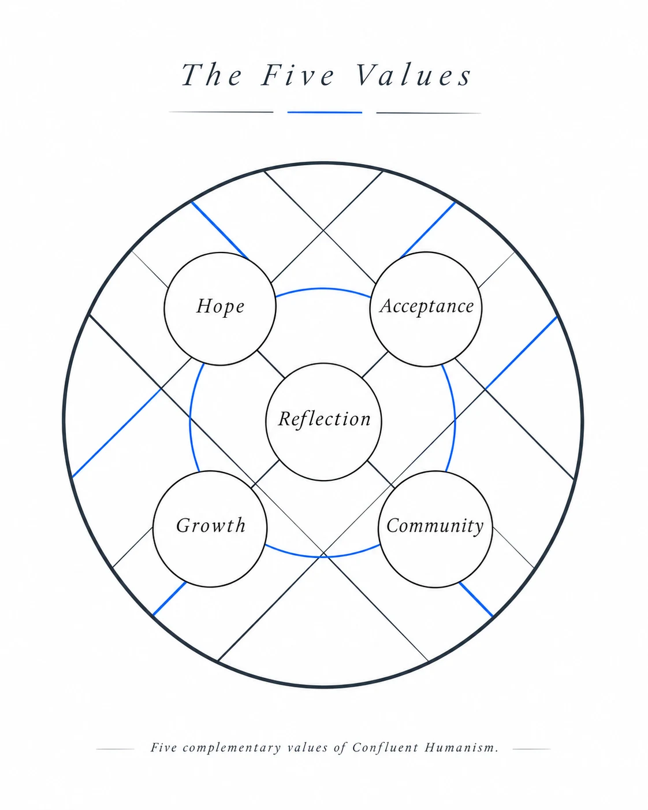

Reflection and Growth
What we notice when we return
At the end of an ordinary week, a person opens a notebook. Nothing remarkable seems to have happened. There was work, a missed appointment, a pleasant conversation, washing to finish and a walk taken later than planned. They nearly close the book without writing.
Then they remember that they had asked for help with something they usually tried to manage alone. The request had felt difficult. The response was generous. The task remained unfinished, but an old assumption—that asking would always be a burden—had loosened a little.
Much of our development happens without a ceremony to announce it. We become more patient with a friend. We recognise a fear sooner. We learn to repair a misunderstanding. We discover that a skill we once struggled with has become familiar. We notice that a habit no longer serves us.
Reflection can help us see such changes, though it cannot guarantee that every day contains a lesson worth recording. The purpose is to pay attention, not to turn life into an examination.
The Reflection of Chance
This book calls its central reflective practice the Reflection of Chance. The name gives a particular shape to a familiar human act: looking back upon what has occurred, considering what influenced it, and wondering what we might do differently when another moment arrives. Traditions of contemplation, journaling and self-examination long predate this name; this book offers a particular arrangement of questions, not a claim to have invented reflection.
A reflection can be spoken, written, thought silently, drawn or shared in conversation. It may take a few minutes or much longer. Some people return to it daily. Others find a weekly rhythm more useful. A history of reflections may reveal patterns that one isolated entry cannot show, but no unbroken record is required and no other person is entitled to inspect it.
We might begin with circumstances. What happened that we did not choose? What help was available, and what barriers mattered? Then we can consider our responses. What did we attempt? What influenced our choices? What do we understand differently now?
We may also consider an alternative: what else might I have done with the information I then possessed? That question can reveal a pattern worth changing. It is different from declaring that another choice would certainly have saved us. The imagined life is a question, not a record of a world that occurred.
A reflection may also include appreciation. An afternoon spent laughing with friends does not need to be defended as productive. A meal, a quiet morning or a view from a familiar window can be worth remembering simply because it was experienced. Not everything valuable needs to advance a plan.
Finally, reflection can turn forward. Is there something to prepare for? A relationship to tend, a misunderstanding to address, a skill to practise, a person to thank? Sometimes the answer is that no action is required today.
The five values of Confluent Humanism meet here. Hope makes room for what has not yet happened. Acceptance acknowledges what has. Reflection examines both. Growth asks how understanding or capacity may change. Community remembers that other people are present in the story and may need our care.

Growth without a score
The word growth is often used as though it describes one direction. More earnings. Higher standing. Faster progress. A longer list of things completed. These changes may be useful, but they are not a complete account of becoming.
Consider four kinds of development.
Intellectual growth may mean acquiring knowledge or learning to ask better questions. A person who changes their mind in response to good evidence may have grown even when no one praises them for it.
Personal growth may involve habits, skills, confidence, self-understanding or the courage to attempt something new. For one person, progress is leaving a familiar routine. For another, it is learning when to stop.
Emotional growth may involve recognising feelings without being ruled by them, finding language for grief, becoming more patient or understanding when professional help is needed. None of this requires a person to be cheerful or composed at all times.
Social growth may involve listening, resolving conflict, learning to cooperate or becoming more comfortable with difference. Someone who once tried to win every argument might learn to ask a question that makes understanding possible.
These forms overlap. A new skill can change a relationship. A difficult conversation can teach us something about our assumptions. Learning to rest can protect the capacity to pursue a meaningful ambition.
No single scale can fairly capture every dimension of a life. A person facing illness or caring for a relative may have little room for visible achievements. Their worth is unchanged. The ability to endure, ask for help or experience a peaceful moment should not have to be turned into a success story.
Reflection's shadow
Looking inward is not always helpful. A person may revisit a decision so often that the past begins to occupy the present. They may fill a notebook with accusations against themselves, searching for the exact moment when everything might have been saved.
Reflection may become harmful when it treats uncertainty as personal failure or demands an explanation that nobody can supply. We cannot know every alternative future. We cannot reconstruct every influence. We cannot assume that a painful event occurred because we failed to notice a warning.
At such times, reflection may need limits. Put the notebook away. Speak to someone trustworthy. Seek professional assistance when distress is serious or persistent. Do something ordinary that returns attention to the present. The practice exists to serve a life, not to supervise it.
Privacy also matters. A person may share a reflection with a friend or community because sharing helps them understand an experience. They should never be required to reveal private entries to prove loyalty, gratitude or commitment. A reflection offered freely is different from a confession demanded by authority.
A yearly reflection can make a larger pattern visible. Such an occasion may be called the Turning of Chance. People might revisit changes in relationships, opportunity, grief or the ways they have cared for others. But a calendar is not a judge. Some years are survived rather than mastered; their meaning need not be assembled by a deadline.
The life still happening
There is a danger in learning to see every event as preparation for something else. An encounter becomes a contact. A hobby becomes a skill to monetise. A moment of rest becomes a strategy for later productivity. Even generosity can become another measure of personal development.
When every moment is asked what it will produce, we may lose our ability to live within it.
Reflection should sometimes lead us back to what is already here: the person at the table, the air after rain, the familiar sound of someone arriving home. Growth is valuable partly because it can deepen our capacity to notice and care for such things, not only because it equips us for a later achievement.
The notebook can help us recognise a direction. It should never become the place where we are required to justify having lived.
For reflection
- What change in understanding or relationship have I overlooked because it produced no obvious achievement?
- When does reflection help me act wisely, and when might it become an unfair judgement of myself?
- What part of my present life deserves appreciation without needing to serve a future goal?
An optional practice: At a time that suits you, record three brief observations: something that influenced your week, something you chose, and something you appreciated. You may keep them entirely private—or decide not to record anything at all.